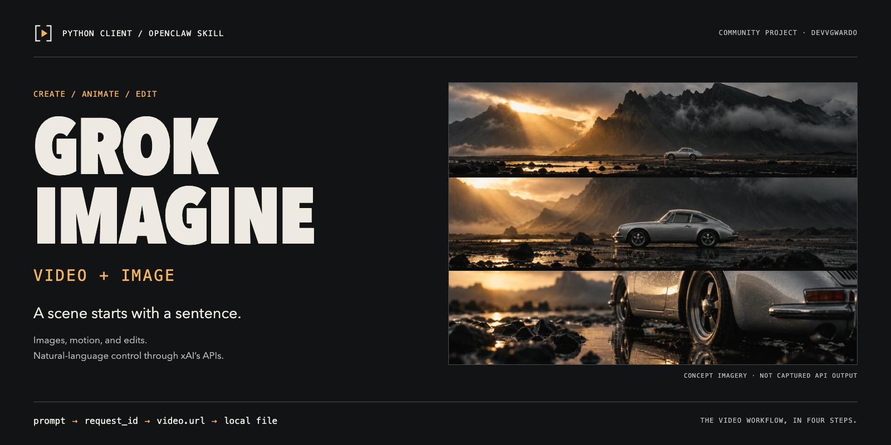
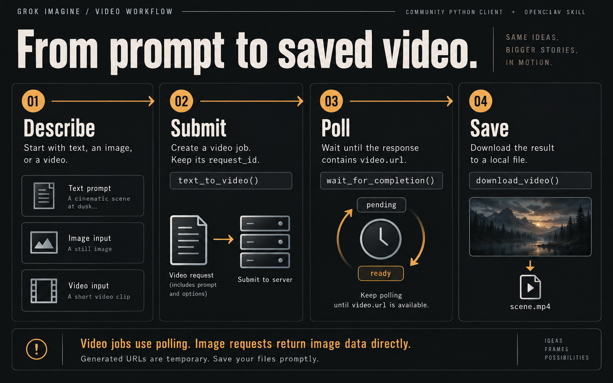
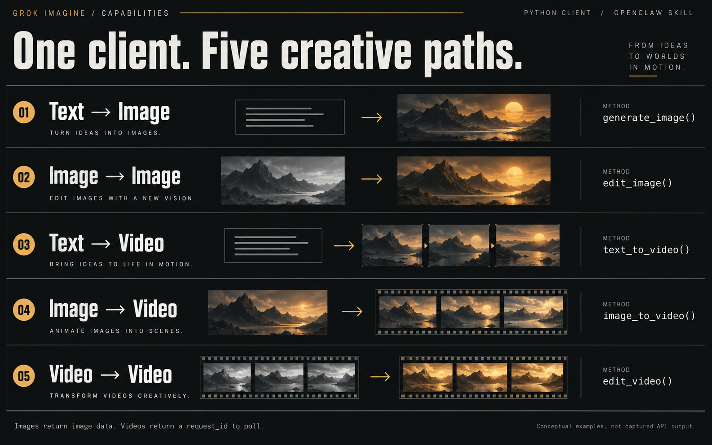

Grok Imagine / Video + Image
Grok Imagine / Video + ImageA scene starts
with a sentence.
Generate an image. Animate a still. Rework a video. A Python client and OpenClaw skill connect natural-language instructions to xAI’s Grok Imagine APIs. Your API key, your prompts, your local files.


From prompt to saved video.
Video generation returns a job ID, not a finished file. Submit, poll for the result, then save it locally.


- DescribeStart with text, an image, or a source video. Include the subject, action, lighting, and camera direction.
- SubmitUse
text_to_video(),image_to_video(), oredit_video(). Keep the returnedrequest_id. - Poll
wait_for_completion()checks job status until the response contains a video URL. This helper blocks while it waits. - SavePass the final response to
download_video(). Generated URLs are temporary, so save the result promptly.
Five creative paths.
Images return image data directly. Video creation and video editing return a request ID to poll.


Text → Image. generate_image() creates images from a prompt.
Image → Image. edit_image() applies natural-language edits to a source image.
Text → Video. text_to_video() starts a video generation job.
Image → Video. image_to_video() animates a still with an optional prompt.
Video → Video. edit_video() requests a change to an existing video.
Built around the frame.
A film-studio identity: deep charcoal, silver, amber light, and precise production-note typography.
This is an independent community package, not an official xAI or OpenClaw identity. The hero imagery and infographics are AI-generated illustrations, not recordings of this client’s output. See the brand and rendering guide for editable sources and asset notes.